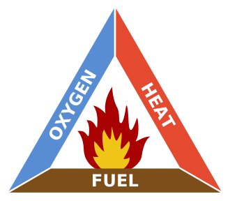
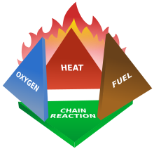

Tabelas para acs-ssg.md
Tabela 1
| Agencies | ||
|---|---|---|
| Acronym | Full Name | Purpose and Website |
| CDC | Centers for Disease Control and Prevention | Research: Protects public health and safety through the control and prevention of disease, injury, and disability |
| EPA | Environmental Protection Agency | Regulatory: Environmental, safety, and health hazards |
| NFPA | National Fire Protection Association | Fire and building codes: Reduces the worldwide burden of fire and other hazards |
| NIOSH | National Institute for Occupational Safety and Health | Research: Conducts research and recommends ways to prevent injury and illness |
| OSHA | Occupational Safety and Health Administration | Regulatory: Safety and health hazards in the workplace |
Tabela 2
| Examples of Hazards and Their Effects | ||
|---|---|---|
| Type of Hazard | Example | Potential Harm |
| Item | Broken glass | Cut |
| Substance | Sodium hydroxide | Blistering of skin |
| Source of energy | Bunsen burner | Burn |
| Condition | Wet floor | Slipping and falling |
Tabela 3
| GHS Hazard Symbols and Their Definitions | |
|---|---|
| GHS Symbol | GHS Class |
Explosive
|
|
Flammable
|
|
Corrosive
|
|
Oxidizer
|
|
Compressed gas
|
| GHS Symbol | GHS Class |
|---|---|
Toxic Substance
|
|
Irritant
|
|
Health Hazard
|
|
Environmental Hazard (non-mandatory)
|
Tabela 4
| NFPA Hazard Identification System | |||
|---|---|---|---|
BLUE Diamond Health Hazard |
RED Diamond Fire Hazard (Flash Points) |
YELLOW Diamond Reactivity |
WHITE Diamond Special Hazard |
| 4 Deadly | 4 Below 73 °F | 4 May Detonate | ACID – Acid |
| 3 Extreme Danger | 3 Below 100 °F | 3 Shock and Heat May Detonate | ALK – Alkali |
| 2 Hazardous | 2 Above 100 °F Not Exceeding 200 °F |
2 Violent Chemical Change | COR – Corrosive |
| 1 Slightly Hazardous | 1 Above 200 °F | 1 Unstable if Heated | OXY – Oxidizer |
| 0 Normal Material | 0 Will Not Burn | 0 Stable | Radioactive |
Tabela 5
| Fire Triangle | |
|---|---|
Three ingredients are essential to produce a fire These ingredients are represented on each side of the fire triangle |
|
|  | 1. Enough oxygen to sustain combustion |
| 2. Enough heat to raise the material to its ignition temperature | |
| 3. Some sort of fuel or combustible material | |
| Source of image: Wikimedia. Fire Triangle. http://upload.wikimedia.org/wi kipedia/commons/thumb/2/20/Fire_ triangle. svg/330px-Fire_triangle.svg.p ng (accessed June 19, 2015). |
{kind=link}
{kind=link}
Tabela 6
| Fire Tetrahedron | ||
|---|---|---|
| When a chemical chain reaction is added to the fire triangle, it becomes a fire tetrahedron Four items are necessary to produce a fire | ||
|  | 1. Oxygen | |
| 2. Heat | ||
| 3. Fuel or combustible material | ||
| 4. A chemical reaction | ||
| Source of image: Wikimedia. Fire Tetrahedron. | ||
| One of the four parts of the tetrahedron much be addressed to prevent or stop a fire. | ||
| Keep fuel and ignition sources separate | Cut off oxygen to the fire by smothering | Use an appropriate fire extinguisher to remove part of the fire tetrahedron |
| Sumário | Página | |
|---|---|---|
| Prefácio | iv | |
| 1 | Escopo | 1 |
| 2 | Referências normativas | 1 |
| 3 | Termos e definições | 1 |
| 4 | Condições gerais | 2 |
| 4.1 | Geração e segregação | 2 |
| 4.2 | Manuseio e acondicionamento | 2 |
| 4.3 | Coleta interna I e transporte interno | 2 |
| 4.4 | Armazenamento interno | 3 |
| 4.5 | Coleta interna II e transporte | 3 |
| 4.6 | Armazenamento externo | 3 |
| 5 | Condições específicas | 4 |
| 5.1 | Resíduos de risco biológico | 4 |
| 5.1.1 | Manuseio e acondicionamento | 4 |
| 5.1.2 | Carro de coleta interna I | 4 |
| 5.1.3 | Armazenamento interno | 5 |
| 5.1.4 | Carro de coleta interna II | 5 |
| 5.1.5 | Armazenamento externo | 6 |
| 5.1.6 | Armazenamento de resíduos sob refrigeração | 7 |
| 5.1.7 | Higienização do abrigo para resíduo | 7 |
| 5.2 | Resíduos de risco químico | 7 |
| 5.2.1 | Geração e segregação | 7 |
| 5.2.2 | Manuseio e acondicionamento | 8 |
| 5.2.3 | Coleta interna e transporte de resíduo de risco químico | 8 |
| 5.2.4 | Armazenamento interno de resíduo de risco químico | 9 |
| 5.2.5 | Armazenamento externo de resíduo de risco químico | 9 |
| Bibliografia | 13 |